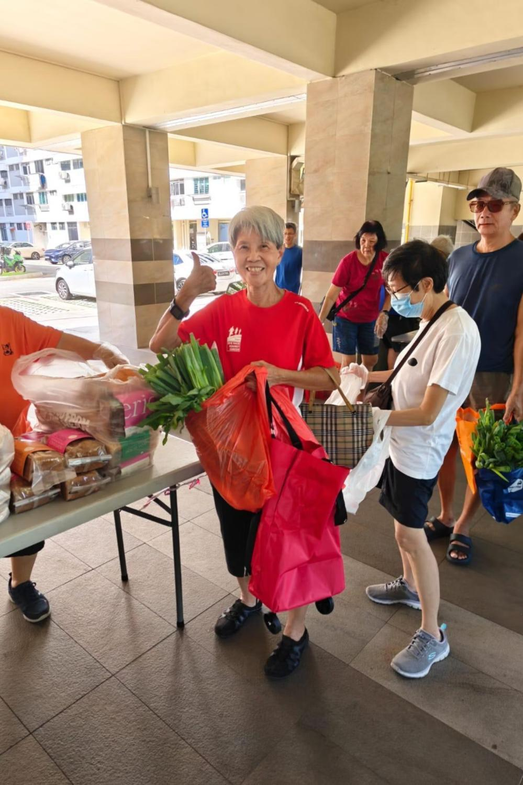
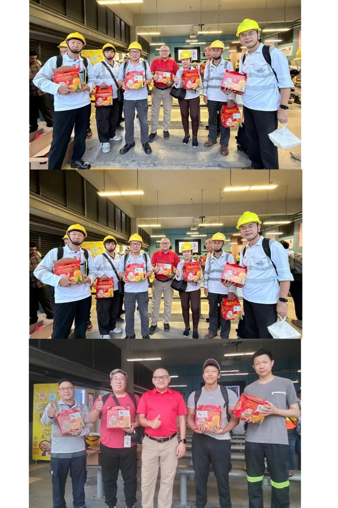

Community / connected beyond the job
Care travels
further.
Food on a table. A celebration shared. A chance to take part. Our community support is about showing up for the people around us.
See care in action
Small acts.Shared possibilities.
Recorded sponsorship and donation support
Community initiatives supported
Figures cover April 2025 to the reporting date of the Enterprise 50 Awards 2026 deck.
Community welfare & food support
Support where it matters most.
Food aid, essential supplies and humanitarian support help reach people facing difficult circumstances.
Food distribution & meal programmes
Ramadan porridge distribution, one-day meal donations and food support for low-income families.
Humanitarian giving
Gaza aid donations form part of the company’s recorded support for humanitarian causes.
Vulnerable seniors & rental-flat residents
Fresh vegetables, groceries and essentials reach residents through the North West CDC V CARE partnership.
Culture, heritage & social cohesion
Keep our shared stories alive.
Community celebrations, religious giving and traditional arts help preserve Singapore’s diverse cultural life.
Festivals & community celebrations
Support includes Deepavali, Pongal, Indian New Year and Ramadan events, including LISHA sponsorships.
Religious & heritage support
Thaipusam devotee support, temple sponsorships, Masjid Jamae Chulia and Prophet Birthday community giving reflect support across community traditions.
Arts & cultural preservation
Anandha Traditional Arts & Music, Indian Heritage Arts Fiesta and folk arts programmes help sustain cultural expression.
Youth, sports & families
Make space for the next generation.
Youth programmes, education support and family participation encourage people to learn, connect and take part.
Charity runs & active participation
Support includes POSB Passion Run for Kids and UOB Heartbeat Charity.
Learning & leadership
Youth activities, education support, skills development and leadership camp sponsorships contribute to future opportunities.
Family connection
Family day celebrations bring colleagues and communities together beyond everyday work.
Social inclusion & community care
Belonging begins with participation.
Support for vulnerable groups and welfare programmes helps more people be seen, included and connected.
Disability community support
The deck records support for AWWA and its disability community work.
Recognising care
Exemplary Mother Award support recognises contributions to family and community life.
Welfare-linked programmes
Community care initiatives complement food support, senior outreach and inclusive participation.
Industry & community partnerships
Better together, in practice.
Working with associations, workers and local partners extends the reach of community support.
Trade associations & worker unions
Support for industry associations and worker unions connects the company with the people and institutions around Singapore’s logistics sector.
Community-linked platforms
Collaboration with community and industry stakeholders helps sustain outreach, cultural activities and social welfare programmes.
Employee volunteering
Bigfoot team members participate directly in distribution events, bringing practical help alongside sponsorship and donations.
Care in action / North West CDC
A delivery with
a different purpose.
The North West CDC V CARE CSR Project supports rental-flat residents and vulnerable seniors through food aid and essential supplies.
- Food aid: Fresh vegetables, groceries and everyday essentials.
- Hands-on involvement: Team members volunteer at distribution events.
- Continuity: An ongoing partnership supports consistent community assistance.
